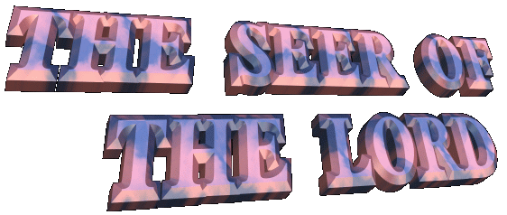

 A NAME - In the small
city of Naju, in the Southwest of the Korean peninsula, since June 30, 1985,
supernatural manifestations have happened which are leaving the whole world
admired and thoroughly surprised, with the greatness of the Divine zeal in to
prove Christian truth. Through OUR LADY, as in others apparitions, the LORD
reveals who loves each one of HIS children of a special mode and therefore, HE
wants our love. In spite of our weaknesses and limitations, HE wants that we
also demonstrate to HIM the big dimensions of our kindness, of our affection
and our faithfulness.
A NAME - In the small
city of Naju, in the Southwest of the Korean peninsula, since June 30, 1985,
supernatural manifestations have happened which are leaving the whole world
admired and thoroughly surprised, with the greatness of the Divine zeal in to
prove Christian truth. Through OUR LADY, as in others apparitions, the LORD
reveals who loves each one of HIS children of a special mode and therefore, HE
wants our love. In spite of our weaknesses and limitations, HE wants that we
also demonstrate to HIM the big dimensions of our kindness, of our affection
and our faithfulness.
For this Divine
charming mission, the LORD has chosen Julia Kim, for to be the interpreter close
to humanity, transmitting HIS Ultimate Wish.
With own words, the Seer summarizes
the life and her encounter with GOD and VIRGIN MARY.
JULIA KIM
- When I remember the past, my mind stays full of astonishment and admiration
because of the Divine Providence.
I was born on March, third day
of 1947, in Naju, South Korea. Until four years of age I lived in perfect
and complete happiness with my parents and family, but the happy
days ended when the Korean War began. My father, my grandfather and my
younger sister died. I and My mother have been survivors and we have had to fight
with perseverance against poverty and difficulties of several natures in order
to survive and to execute the mission of our life. In 1972 I married with Julio
Kim and of our marriage two boys and two girls were born. I had to interrupt my
studies in the secondary school, because of our poverty, although always having
interest in to study to develop my learning the how much more possible. I had problems
serious of health for long and painful years including hemorrhages that didn't
cease, although I went submitted to an endless number of exams, treatments and
operations without any success, because in the last times they discovered cancer
generalized in my body. The doctors announced of a formal and categorical way my
condemnation to death. The technical resources and the hope of the specialists
ended. However, was born in me a mysterious and impressive force, because I
wanted to live and also I didn't want to disappoint my mother transmitting
the fateful news to her, precisely her, who never abandoned me and aided me
in everything. But the disease was very strong and dominated my body almost
entirely. In several places the skin of my body began to stay insensitive. My
mother and my husband in those places they applied massages in order to recover
the sensibility. It improved, but at times the places remained asleep. The blood
pressure lowered to an alarming level, and because of problems in the veins, I
couldn't take injections in them and nor to drink any alcoholic stimulant. My
life truly was extinguishing slowly. Several women of the local Presbyterian
Church constantly they visited me and took me for the temple in order to pray,
and after, they came back with me, although as a matter of fact what I wanted was
to frequent the Catholic Church. One day, two of those women after to have told me
comfort words said good-bye, and outside of my room, they commented among
themselves: "I have great regret
for this poor woman, although the life is a precious thing, her disease haven't cure
and is killing her family.". I thought: "It is true, why didn't I think before in this?"
I prepared a strong dose of potassium cyanide and wrote
seven letters: to my mother, my husband, one for each of the four children and one
letter for that woman who could be the wife future of my husband.
THE LIGHT OF GOD SHONE
I thought in my father, in my youth, and how to accomplish my sinister plan,
when suddenly my husband entered in house, he had come back
earlier from work and he said:
Mel! Some thing in me wants us to visit the Catholic Church".
in house, he had come back
earlier from work and he said:
Mel! Some thing in me wants us to visit the Catholic Church".
On that same day we visited the Church
in Naju. Finding the parish priest, I spoke:
"Father, if GOD really exists, I can also affirm that HE is cruel. Why must I
drink from this bitter chalice? What did I do to deserve all this "?
The priest answered me:My daughter, you are receiving an incomparable
amount of graces in your body. They are graces full of sufferings and pains
and for this reason, very special. I didn't receive nor a little of those GOD'S
graces. Believe me and think of this truth that I tell you".
When I heard those words, a quick reflex
silenced my lips, while my face manifested itself in an attitude of credibility.
I answered with almost inaudible voice: "Amen ".
Until that
moment, my body was cold and without life. Suddenly, it began to warm, the
circulation of the blood increased, the beats of the heart accelerated and I
sweated everywhere. The HOLY GHOST began to work in me.
We prayed in Church and after we said
goodbye to the priest, coming back to the house we decided us to join at Catholic
religion and with this purpose, we acquire a Bible, a book of prayer and a small
image of OUR LADY in the store of the Parish.
In the third day, I heard JESUS' Voice:
"Read the Bible, it is
MY Live Word ".
Immediately I
opened the Sacred Writing and exactly in Gospel of the LORD JESUS CHRIST written
by St. Luke (Luke 8.40-48), about the woman was with hemorrhage there is 12 years.
Her faith was so great that she said, if she touched the clothing of JESUS she
would be cured and in fact this happened when she reached HIM and touched The
LORD. In the Bible is written that JESUS told her: "Daughter, thy faith hath made thee whole; go thy way in peace".
(Luke 8.48)
In the following verses there is the story from the
chiefés daughter of the synagogue who was dead. JESUS said: "Fear not; believe only, and she shall be safe". (Luke 8.50) The chief believed in the word of The LORD and his daughter lived
again.
Meditating, I
understood that those words were also for me. Thus, alone in my room I spoke
with conviction: "LORD,
I believe; I believe my GOD, I believe sincerely".
In the following days, we frequented the
Parochial Catechism and we studied (my husband and I) the Christian doctrine,
getting the knowledge necessary to receive the Baptism, which happened soon in a few weeks.
which happened soon in a few weeks.
Then the
CREATOR made a great miracle! I was cured of the cancer and of all the evils
that infested my body. So happy I have stayed that I didn't know what to do to
thank GOD. I was full of satisfaction and very impressed with such great
kindness and compassion of the LORD. Being involved by a great emotion I wanted
to run, to fly, to climb the top of the highest hill, to be close to the LORD
and to shout, to shout without stopping, with all the forces of my heart small
and fragile, with the best eagerness and the deepest tenderness of my soul, a
loud shout replete of immense love, saying:I love YOU, I adore YOU, my GOD, light of my life, my love and my
everything". It went the way that my poor
spirit chose to manifest my sincere joy and my gratefulness to
our GOD and our BLESSED MOTHER.
I started to
frequent the Catholic Church with assiduity and interest. I entered in the
Charismatic Movement and in Mary's Legion, because I wanted to be next of the
LORD and of the VIRGIN MOTHER, accomplishing an apostolate in honor and praise
of our GOD and OUR LADY. My organism was perfect and my disposition for work was
enviable. I established a beauty parlor, in order to collaborate in the family
budget. My existence won new life and I was a person full of happiness and
ideals.
Ever since
JESUS reestablished my health marvelously and on June 30, 1985, supernatural
manifestations began, with the tears of our BLESSED MOTHER'S image, also the
tears of blood and the spill of perfumed oil that it sprouted from the body of
the small image. It followed with the grace that granted me sufferings in
opportunities defined by HIM, the stigmas of the passion of the LORD in my feet
and in my hands, the terrible pains of the crucifixion, everything by the
sinners conversion, and in recompense by the abominable abortions that are
accomplished, also in benefit of the souls of purgatory so that they may rise to
heaven. At last, the LORD allowed those extraordinary and admirable Eucharistic
Miracles. I, a poor and unworthy creature, have the honor of to show in my own
mouth, the Body and the live Blood of our adored GOD.
The LORD is my
light and salvation. HE is the Absolute Love that it made to be born and to grow
the love in our life. It is a beautiful Love, sweet, full of passion, but who demands
faithfulness and sacrifice. The love's flower to bloom and to stay more beautiful
is necessary to overcome the difficulties daily, even to love the cold weather
of the winter and to accept with resignation and courage the pains that
visit us unceasingly, because they make us to imitate the martyrs, in the same
way as they donated your life for greater honor and glory of the CREATOR.
I want to be the LORD'S consoler. I accept all the pains and sacrifices to assuage
the deceptions and sadness of the Sacred Heart because of the indifferences
and transgressions of our brothers which still didn't find the Light of GOD:
"... Unless the
grain of wheat falling into the ground it dies, it remained alone. But if it
dies, it will bring forth much fruit. "(John
12.24-25)


The pains of the
crucifixion were so great that Julia at times swooned. - Chapel of Naju.

Next Page 
 Previous
Page
Previous
Page
Comes
Back to the Index